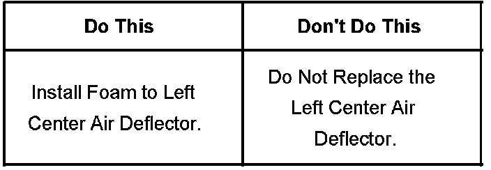
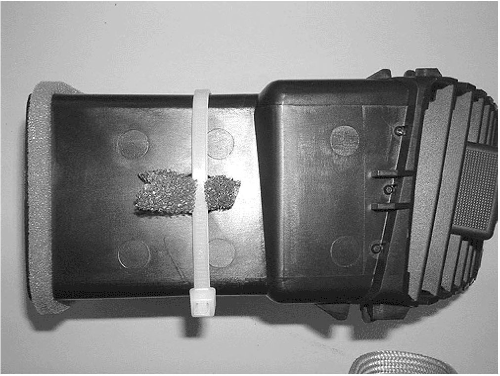
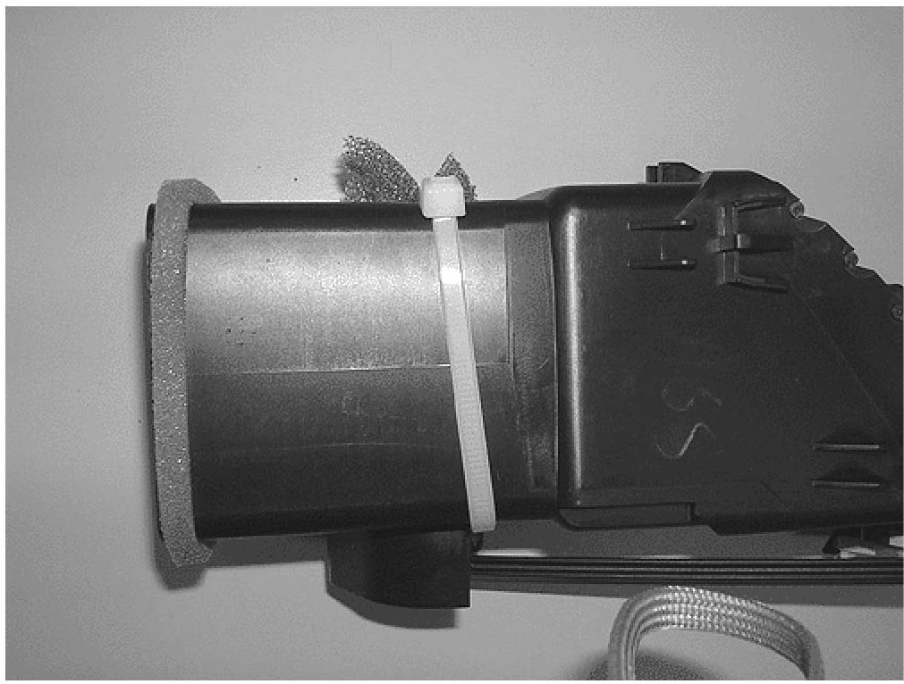
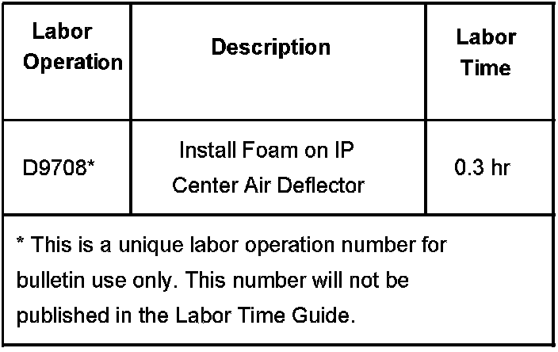

Interior/A/C - Rattle From L/H I/P Air Deflector
Bulletin No.: 06-01-37-007Date: September 08, 2006
TECHNICAL
Subject:
Rattle Noise in Left Center IP Air Deflector (Install Foam to Air Deflector)
Models:
2007 Cadillac Escalade, Escalade ESV, Escalade EXT
Condition
Some customers may comment about a rattle noise in the left center IP air deflector when the blower is on.
Cause
This condition may be due to the airflow door being loose.
Correction



Remove the IP accessory trim plate following published service information. With the center air outlet deflectors still attached to the trim plate, install foam to the left air deflector as shown using a tie strap. Reinstall the IP accessory trim plate.
Warranty Information

For vehicles repaired under warranty, use the table.

Disclaimer